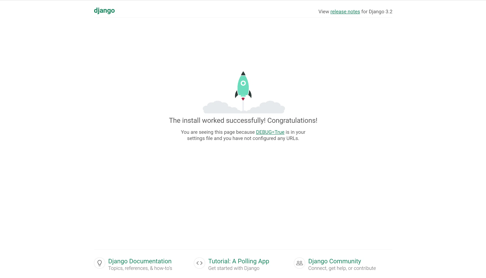

为什么要使用Django?
Django是一个用python编写的Web框架。Web框架是一种软件，基于web框架可以开发动态网站，各种应用程序以及服务。它提供了一系列工具和功能，可以解决许多与Web开发相关的常见问题，比如∶ 安全功能，数据库访问，会话，模板处理，URL路由，国际化，本地化，等等。
使用诸如 Django 之类的网络框架，使我们能够以标准化的方式快速开发安全可靠的Web应用程序，而无需重新发明轮子。
那么，Django有什么特别之处呢? 对于初学者来说，它是一个Python Web框架，这意味着你可以受益于各种各样的开源库包。如果当你想要解决一个特定的问题的时候，可能有人已经为它实现了一个库来供你使用。Django是用python编写的最流行的web框架之一。它绝对是最完整的，提供了各种各样的开箱即用的功能，比如用于开发和测试的独立Web服务器，缓存，中间件系统，ORM，模板引擎，表单处理，基于Python单元测试的工具接口。Django还自带内部电池，提供内置应用程序，比如一个认证系统，一个可用于 cRuD （增删改查）操作并且自动生成页面的后台管理界面，生成订阅文档（RSS/Atom），站点地图等。甚至在django中内建了一个地理信息系统（GIS）框架。
安装
通过虚拟环境安装，先安装虚拟环境。
1 | pip install virtualenv |
创建虚拟环境并激活，在虚拟环境下安装django。
1 | mkdir myproject |
如果要退出虚拟环境，运行deactive就退出了虚拟环境。
创建一个项目
1 | django-admin startproject myproject |
执行上面的命令后，会在目录下生成基础文件夹结构。
1 | vnev/ |
最初项目由五个文件构成：
manage.py：使用django-admin命令行工具得快捷方式。用于运行与项目相关得管理命令。__init__.py：告诉python这个文件夹是一个python包seetings.py：这个文件包含了所有得项目配置。urls.py：这个文件负责映射项目中得路由和路径。wsgi.py：该文件是用于部署得简单网关接口。
django自带了一个简单得网络服务器。在开发过程中无需安装其他软件即可在本地运行项目，通过执行命令测试一些。
1 | python manage.py runserver |
访问http://127.0.0.1:8000/，你可以看到下面页面。

使用ctrl+c来终止服务器。
Django应用
在Django得哲学中，有两个重要概念：
- app：是一个可以完成做某件事情得web应用程序。一个应用程序通常由一组models（数据库表），views（视图），templates（模板），tests（测试）组成。
- project：是配置和应用程序得集合。一个项目可以由多个应用程序或一个应用程序组成。
创建一个应用：
1 | django-admin startapp boards |
执行上面的命令后，会在myproject/目录下生成boards文件夹。
1 | vnev/ |
文件作用介绍：
migrations/：在这个文件夹里，Django会存储一些文件跟踪models文件中创建得变更，用来保持数据库和models.py的同步。admin.py：这个文件为一个django内置的应用程序Django Admin的配置文件。apps.py：应用程序本身的配置文件。models.py：定义web应用程序数据实列的地方，models会由Django自动转为数据库表。tests.py：这个文件用来写当前应用程序的单元测试。views.py：处理web应用程序请求（request）/响应（response）周期的文件。
现在创建了第一个应用程序，来配置下项目以便启用这个应用程序。
在settings文件中INSTALLED_APPS中添加这个应用：
1 | INSTALLED_APPS = [ |
创建视图
现在来写第一个视图（view），打开boards应用程序中的views.py文件，并添加以下代码：
1 | from django.http import HttpResponse |
视图是接收httprequest对象并返回一个httpresponse对象的python函数。接收request作为参数并返回response作为结果。
这里定义了一个简单的视图，命名为home，它只是简单返回一个信息，一个字符串hello world。
接下来需要告诉Django什么时候会调用这个view。在boards文件夹下创建urls.py文件并添加以下内容中添加：
1 | from django.urls import path |
下一步是要在根 URLconf 文件中指定我们创建的 boards.urls模块。在 myproject/urls.py 文件的 urlpatterns 列表里插入一个 include()， 如下：
1 | from django.contrib import admin |
函数 include() 允许引用其它 URLconfs。每当 Django 遇到 include() 时，它会截断与此项匹配的 URL 的部分，并将剩余的字符串发送到 URLconf 以供进一步处理。
访问http://127.0.0.1:8000/，就会返回hello world。